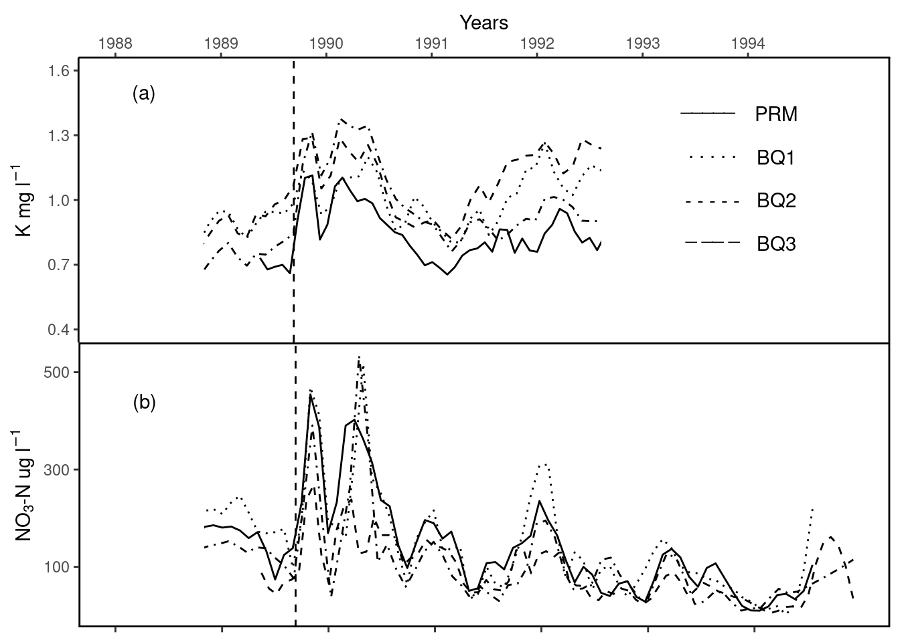

library(tidyverse)
ggg_path <- "/courses/EDS214/group_project/2024/ggplot-gurus/raw_data"
bq1 <- read_csv(file.path(ggg_path, "QuebradaCuenca1-Bisley.csv"))
bq2 <- read_csv(file.path(ggg_path, "QuebradaCuenca2-Bisley.csv"))
bq3 <- read_csv(file.path(ggg_path, "QuebradaCuenca3-Bisley.csv"))
prm <- read_csv(file.path(ggg_path, "RioMameyesPuenteRoto.csv"))ggplot() gurus
Impact of Hurricane Hugo on Stream Chemistry
Import Raw Data
Clean Data
library(tidyverse)
library(janitor)
library(dplyr)
# clean data names and select columns of interest(sample date, K, NO3_N) ----
bq1_tidy <- bq1 %>%
select(Sample_Date, K, `NO3-N`) %>%
clean_names()
bq1_tidy <- bq1_tidy %>%
filter(between(sample_date, as.Date('1988-01-01'), as.Date('1994-12-31')))
bq2_tidy <- bq2 %>%
select(Sample_Date, K, `NO3-N`) %>%
clean_names()
bq2_tidy <- bq2_tidy %>%
filter(between(sample_date, as.Date('1988-01-01'), as.Date('1994-12-31')))
bq3_tidy <- bq3 %>%
select(Sample_Date, K, `NO3-N`) %>%
clean_names()
# filter dates between 1988 and 1994 ----
bq3_tidy <- bq3_tidy %>%
filter(between(sample_date, as.Date('1988-01-01'), as.Date('1994-12-31')))
prm_tidy <- prm %>%
select(Sample_Date, K, `NO3-N`) %>%
clean_names()
prm_tidy <- prm_tidy %>%
filter(between(sample_date, as.Date('1988-01-01'), as.Date('1994-12-31')))Data Visualization
library(patchwork)
k_plot <- ggplot() +
geom_smooth(data= bq1_tidy, aes(x= sample_date, y = k),
linetype = "dotted", color = "black", linewidth = .5, se = FALSE, span = 0.06 ) +
geom_smooth(data= prm_tidy, aes(x= sample_date, y = k ),
linetype= "solid", color = "black", linewidth = .5, se = FALSE, span = 0.06) +
geom_smooth(data= bq2_tidy, aes(x= sample_date, y = k),
linetype = "dashed", color = "black", linewidth = .5, se = FALSE, span = 0.06) +
geom_smooth(data= bq3_tidy, aes(x= sample_date, y = k),
linetype = "dotdash", color = "black", linewidth = .5, se = FALSE, span = 0.06) +
scale_x_continuous(position = "top", labels = 1988:1994,
breaks = seq.Date(from = as.Date("1988-01-01"),
to = as.Date("1994-01-01") , by = "1 year")) +
scale_y_continuous(breaks=seq(0.4, 1.6, by = 0.3), limits = c(0.4, 1.6)) +
labs(x = "Years", y = expression("K mg l"^-1)) +
theme(plot.margin = margin(0, 0, 0, 0),
panel.spacing = unit(0, "lines"),
panel.background = element_blank(),
axis.line.x.bottom = element_blank(),
axis.line.x.top = element_line(colour = "black",linewidth=0.5),
axis.line.y.right = element_line(colour = "black",linewidth=0.5),
axis.line.y.left = element_line(colour = "black",linewidth=0.5)) +
geom_vline(xintercept = as.numeric(as.Date("1989-09-10")),
color = "black", linetype = "dashed") +
annotate("text", x = as.numeric(as.Date("1988-04-10")),
y = 1.5, label = "(a)", color = "black") +
annotate(geom = 'segment', x = Inf, xend = Inf, color = 'black', y = -Inf, yend = Inf, size = 1) +
geom_rect(aes(xmin = as.Date("1992-08-10"),
xmax = as.Date("1995-01-01"),
ymin = 0.5,
ymax = 1.5,),
fill = "white") +
geom_rect(aes(xmin = as.Date("1988-01-01"),
xmax = as.Date("1988-11-01"),
ymin = 0.5,
ymax = 1.3,),
fill = "white") +
annotate("text", x = (as.Date("1993-08-15", "%Y-%m-%d")),
y = 1.45, label = "_____", color = "black") +
annotate("text", x = (as.Date("1993-09-01", "%Y-%m-%d")),
y = 1.23, label = ". . . . .", color = "black") +
annotate("text", x = (as.Date("1993-09-01", "%Y-%m-%d")),
y = 1.0, label = "- - - - -", color = "black") +
annotate("text", x = (as.Date("1993-09-01", "%Y-%m-%d")),
y = 0.85, label = "_ __ _", color = "black") +
annotate("text", x = (as.Date("1994-04-10", "%Y-%m-%d")),
y = 1.4, label = "PRM", color = "black") +
annotate("text", x = (as.Date("1994-04-10", "%Y-%m-%d")),
y = 1.2, label = "BQ1", color = "black") +
annotate("text", x = (as.Date("1994-04-10", "%Y-%m-%d")),
y = 1.0, label = "BQ2", color = "black") +
annotate("text", x = (as.Date("1994-04-10", "%Y-%m-%d")),
y = 0.8, label = "BQ3", color = "black")
no3_n_plot <- ggplot() +
geom_smooth(data= bq2_tidy, aes(x= sample_date, y = no3_n), linetype = "dotted"
, color = "black", linewidth = .5, se = FALSE, span = 0.07) +
geom_smooth(data= bq3_tidy, aes(x= sample_date, y = no3_n), linetype = "solid"
, color = "black", linewidth = .5, se = FALSE, span = 0.07) +
geom_smooth(data= prm_tidy, aes(x= sample_date, y = no3_n), linetype= "dashed"
, color = "black", linewidth = .5, se = FALSE, span = 0.07) +
geom_smooth(data= bq1_tidy, aes(x= sample_date, y = no3_n), linetype = "dotdash"
, color = "black", linewidth = .5, se = FALSE, span = 0.07) +
scale_y_continuous(breaks = c(100, 300, 500)) +
scale_x_continuous(position = "bottom", labels = 1988:1994,
breaks = seq.Date(from = as.Date("1988-01-01"),
to = as.Date("1994-01-01") , by = "1 year")) +
labs(x = " ", y = (expression(NO[3]*"-N ug l"^-1))) +
theme(axis.title.x = element_blank(),
axis.text.x = element_blank(),
plot.margin = margin(0, 0, 0, 0),
panel.spacing = unit(0, "lines"),
panel.background = element_blank(),
panel.border = element_rect(colour = "black", fill=NA, size=1)) +
geom_vline(xintercept = as.numeric(as.Date("1989-09-10")),
color = "black", linetype = "dashed") +
annotate("text", x = (as.Date("1988-04-10", "%Y-%m-%d")),
y = 440, label = "(b)", color = "black") +
geom_rect(aes(xmin = as.Date("1988-01-01"),
xmax = as.Date("1988-11-01"),
ymin = 10,
ymax = 300),
fill = "white")
combined_plot <- k_plot / no3_n_plot +
plot_layout(ncol = 1, heights = c(1, 1))
combined_plot
Hurricane Maria Comparison
library(tidyverse)
library(janitor)
library(dplyr)
# data_read ----
ggg_path <- "/courses/EDS214/group_project/2024/ggplot-gurus/raw_data"
bq1 <- read_csv(file.path(ggg_path, "QuebradaCuenca1-Bisley.csv"))
bq2 <- read_csv(file.path(ggg_path, "QuebradaCuenca2-Bisley.csv"))
bq3 <- read_csv(file.path(ggg_path, "QuebradaCuenca3-Bisley.csv"))
prm <- read_csv(file.path(ggg_path, "RioMameyesPuenteRoto.csv"))
# data_clean ----
bq1_tidy_maria <- bq1 %>%
select(Sample_Date, K, `NO3-N`) %>%
clean_names()
bq1_tidy_maria <- bq1_tidy_maria %>%
filter(between(sample_date, as.Date('2016-01-01'), as.Date('2021-12-31')))
bq2_tidy_maria <- bq2 %>%
select(Sample_Date, K, `NO3-N`) %>%
clean_names()
bq2_tidy_maria <- bq2_tidy_maria %>%
filter(between(sample_date, as.Date('2016-01-01'), as.Date('2021-12-31')))
bq3_tidy_maria <- bq3 %>%
select(Sample_Date, K, `NO3-N`) %>%
clean_names()
bq3_tidy_maria <- bq3_tidy_maria %>%
filter(between(sample_date, as.Date('2016-01-01'), as.Date('2021-12-31')))
prm_tidy_maria <- prm %>%
select(Sample_Date, K, `NO3-N`) %>%
clean_names()
prm_tidy_maria <- prm_tidy_maria %>%
filter(between(sample_date, as.Date('2016-01-01'), as.Date('2021-12-31')))
# data_viz ----
#048A81
#06D6A0
#54C6EB
#8A89C0
k_plot_maria <- ggplot() +
geom_line(data= bq1_tidy_maria, aes(x= sample_date, y = k, color="BQ1"), size=1.5) +
geom_line(data= bq2_tidy_maria, aes(x= sample_date, y = k, color="BQ2"), size=1.5) +
geom_line(data= bq3_tidy_maria, aes(x= sample_date, y = k, color="BQ3"), size=1.5) +
geom_line(data= prm_tidy_maria, aes(x= sample_date, y = k, color="PRM"), size=1.5) +
scale_color_manual(values = c("BQ1" = "#048A81", "BQ2" = "#06D6A0", "BQ3" = "#54C6EB", "PRM" = "#8A89C0")) +
geom_vline(xintercept = as.Date("2017-09-16"), linetype = "dashed", color="navy") +
annotate("text", x=as.Date("2017-11-16"), y=1.9, label= "Hurricane Maria\nSeptember 16, 2017") +
labs(color = "Sites") +
theme(legend.position = c(0.25, 0.8),
legend.background = element_blank(),
legend.key.size = unit(10, 'cm'),
legend.key.height = unit(1, 'cm'),
legend.key.width = unit(4, 'cm'),
plot.title = element_text(hjust = 0.5, size= 25)) +
labs(x="Sample Date", y="Potassium Content\n(mg/L)", title = "Effects of Hurricane Maria on Potassium Content in Luquillo Creeks")
no3_n_maria <- ggplot() +
geom_line(data = bq1_tidy_maria, aes(x = sample_date, y = no3_n, color = "BQ1"), size = 1.5) +
geom_line(data = bq2_tidy_maria, aes(x = sample_date, y = no3_n, color = "BQ2"), size = 1.5) +
geom_line(data = bq3_tidy_maria, aes(x = sample_date, y = no3_n, color = "BQ3"), size = 1.5) +
geom_line(data = prm_tidy_maria, aes(x = sample_date, y = no3_n, color = "PRM"), size = 1.5) +
scale_color_manual(values = c("BQ1" = "#048A81", "BQ2" = "#06D6A0", "BQ3" = "#54C6EB", "PRM" = "#8A89C0")) +
geom_vline(xintercept = as.Date("2017-09-16"), linetype = "dashed", color="navy") +
annotate("text", x=as.Date("2017-07-10"), y=700, label= "Hurricane Maria\nSeptember 16, 2017") +
labs(color = "Sites") +
theme(legend.position = c(0.2, 0.8),
legend.background = element_blank(),
legend.key.size = unit(10, 'cm'),
legend.key.height = unit(1, 'cm'),
legend.key.width = unit(4, 'cm'),
plot.title = element_text(hjust = 0.5, size= 25)) +
labs(x="Sample Date", y="Nitrate Content\n(g/L)", title = "Effects of Hurricane Maria on Nitrate Content in Luquillo Creeks")